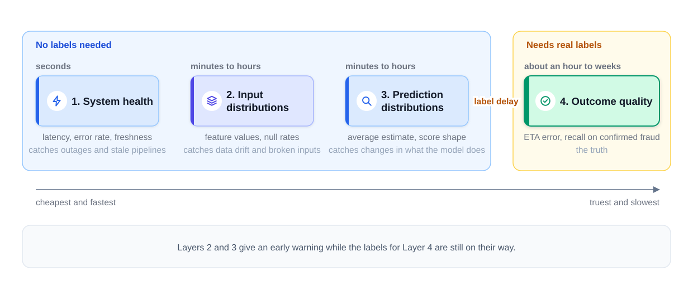
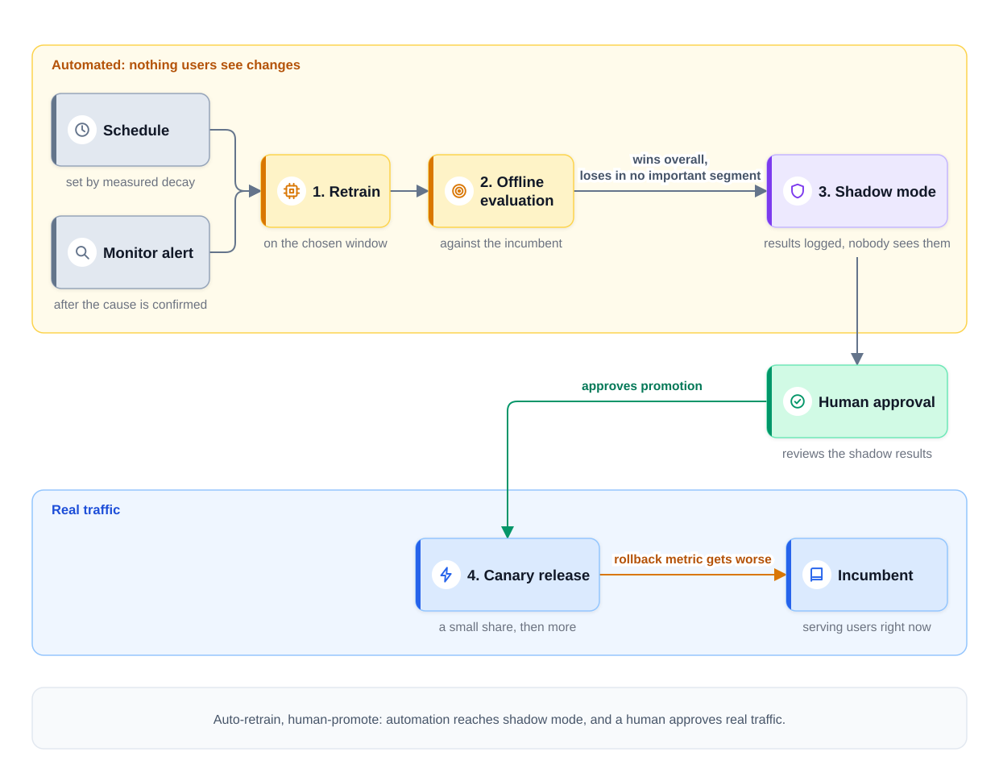
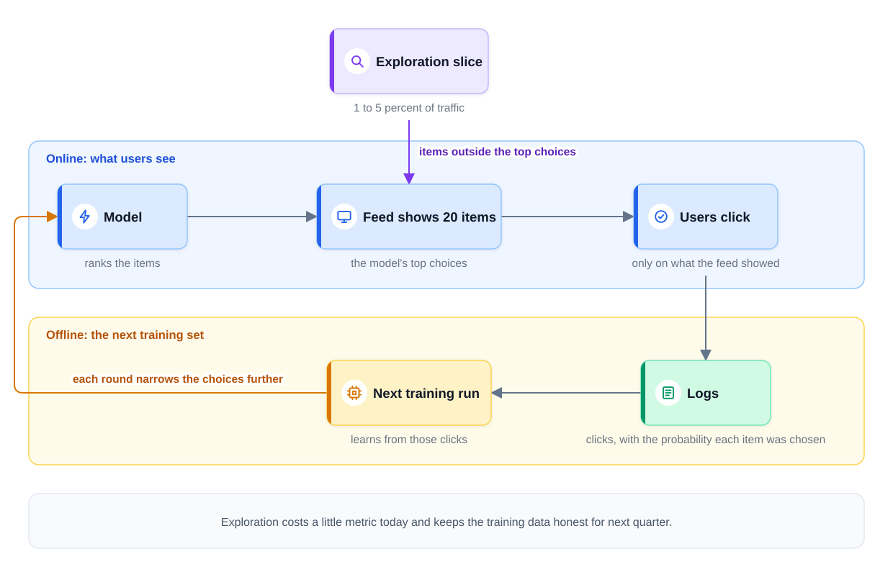

0% completed
Monitoring, Drift, and Retraining
On This Page
Know the Vocabulary
Part 1: A Model Can Get Worse While Nothing Breaks
Part 2: The Two Kinds of Drift
Data Drift: The Inputs Change
Concept Drift: The Relationship Changes
What Drift Is Not
Part 3: Four Layers of Monitoring
Label Delay Decides How Much You Need the Early Layers
Always Split by Segment
Part 4: When an Alert Fires
Many Drift Alerts Are Broken Pipelines
The Order to Debug a Quality Drop
Part 5: Three Ways to Retrain
Scheduled Retraining
Triggered Retraining
Online Learning
How Much History to Train On
Part 6: Every Retrain Passes the Same Gates
Auto-Retrain, Human-Promote
Part 7: When the Model Writes Its Own Training Data
The Feed's Feedback Loop
Fraud's Version Is Worse
Exploration Keeps the Data Honest
Part 8: Using This in an Interview
Part 9: Common Mistakes
Mistake 1: Monitoring Only the Service
Mistake 2: Waiting for the Labels
Mistake 3: Retraining on Every Alert
Mistake 4: Shipping a Retrained Model With No Gate
Mistake 5: Ignoring the Feedback Loop
FAQs
Key Takeaways
Check Your Understanding
Know the Vocabulary
This lesson uses the terms below many times. Read them once now, and come back here when a later section needs one.
- Drift: The decay in a model's quality as the world changes. It is often gradual, but it can also be sudden. The code stays the same, but the world it learned from does not. The word also names the change itself: a shift in the inputs, or in how they relate to the outcome.
- Data drift: A change in the inputs a model receives. The feature values shift, while the learned relationship may still hold.
- Concept drift: A change in how the inputs relate to the outcome. The same feature values now lead to a different result.
- Distribution: The pattern of values that a feature or a prediction takes across many requests.
- Label delay: The time between a prediction and the arrival of its real outcome. For a delivery, it can be about an hour. For a fraud chargeback, it can be weeks.
- Incumbent: The model version that is serving users right now. Every new candidate is compared with it.
- Shadow mode: A test where a new model scores live requests next to the incumbent, but nobody sees its results.
- Canary release: A release that sends a small share of real traffic to the new model first, and more traffic later if it behaves well.
- Retraining window: The span of past data that a retraining job learns from, such as the last eight weeks.
- Feedback loop: A loop where the model's own decisions shape the data it learns from next.
- Exploration: Deliberately giving a small share of traffic something other than the model's top choice, to learn outcomes the model would never see.
- Segment: One slice of the traffic, such as one city, one restaurant type, or one device type.
Part 1: A Model Can Get Worse While Nothing Breaks
Go back to the food-delivery company from the Module 2 introduction, whose model predicts the delivery time at checkout. On launch day, its average error is about 4 minutes, as an example. Three months later, the error is 6 minutes. No one changed the code, no server failed, and no alert fired.
What changed was the world. New restaurants joined, a city opened a new bridge, and the company began to send couriers with two orders at once. The model still answers in a few milliseconds, but its answers are less accurate.
This is drift: the decay in a model's quality as the world changes. It is often gradual, as here, but it can also be sudden. It is the normal state of a deployed model, not a rare accident. A model learns from past data, and that data gets older every day the model serves.
Drift is hard to see. A regular service that breaks shows errors and timeouts. A drifting model shows no errors at all. It keeps returning numbers that look normal, and each number is a little more wrong.
So a deployed model needs three things that ordinary services do not.
- Monitoring that checks the answers, not just the service. It tells you that quality is changing.
- Retraining, which rebuilds the model from fresher data.
- Safe promotion, which makes sure the retrained model is really better before users see it.
This lesson covers all three, plus a quieter problem: a model that slowly shapes its own training data.
Part 2: The Two Kinds of Drift
Drift comes in two kinds: data drift and concept drift. They have different causes, so they need different responses.
Data Drift: The Inputs Change
Data drift is a change in the inputs. The features take values that the model saw rarely, or in different amounts. The rule the model learned may still be true.
Here is an example. The company launches in a new city where most restaurants are far from homes. Long trips used to be rare, and now they are common, so the distance feature has a new distribution.
The link between distance and delivery time may not have changed at all. A 6-mile trip still takes about as long as before. But the model saw few long trips in training, so its estimates for them are less reliable. It needs more examples of the new inputs, not a new rule.
Concept Drift: The Relationship Changes
Concept drift is a change in the relationship between the features and the outcome. The inputs can look exactly the same as before, but what they mean for the outcome has changed.
Here is an example. One restaurant moves to a bigger, faster kitchen. Its historical prep-time feature still says 18 minutes, because that is its past average. Its real prep time is now 11 minutes. The feature value did not change, but what that value predicts did. So the model keeps adding time that the kitchen no longer needs.
This is concept drift, not data drift. Data drift would mean that the feature values themselves moved. Here, the same feature values now imply a different outcome.
Concept drift is usually the more harmful kind. The model's rule is now wrong, so more examples of the old kind do not help. The model needs new labels that show the new relationship.
Some concept drift is caused by people who want the model to fail, and fraud is the main example. When a model learns to catch one trick, fraudsters switch to another. The inputs may look normal, but what they mean has changed. This is concept drift driven by an opponent, and Design Fraud Detection builds a design around it.
The table below puts the two kinds side by side.
| Data drift | Concept drift | |
|---|---|---|
| What changes | The inputs | The relationship between inputs and outcome |
| Delivery example | A new city brings many long trips | A kitchen gets faster, but its prep-time feature still says 18 minutes |
| Can you see it without labels? | Yes, by watching feature distributions | Often not until the outcomes arrive |
| Usual response | Train on data that includes the new inputs | Train on fresh labels that show the new relationship |
The two kinds can happen together. A new city can bring new inputs and new traffic rules at the same time.
What Drift Is Not
Drift is not a crash. A server that stops answering is an outage, and ordinary service alerts catch it within seconds.
Drift is not a bug in a recent deployment. A bug starts at a known moment, and rolling back the change usually fixes it.
Drift is not training-serving skew. Skew means that training and serving compute a feature in different ways, as Training vs Serving explains. Skew is a defect that exists from the first day. Drift is the world moving after training.
Drift is not retraining. Retraining is a scheduled or triggered job that responds to drift.
Part 3: Four Layers of Monitoring
The most direct test of quality is to compare predictions with real outcomes. But outcomes arrive late, so a good design watches four layers. Each layer is cheaper and faster than the one after it. The last layer is the truest and the slowest.
Layer 1: System health. This layer watches the service and its pipelines: request rate, latency, error rate, and failed jobs. It also tracks freshness, meaning how old each feature value is when the model reads it. It catches outages and stale pipelines, with a lag of seconds. It cannot tell you whether the answers are good.
Layer 2: Input distributions. This layer compares each feature's distribution today with a reference, such as the training data. It watches averages, ranges, the share of missing values, and how often a default value is used. A distance score, such as the population stability index (PSI), measures how far two distributions have moved apart. This layer needs enough requests to compare, so its lag is minutes to hours. It catches data drift and broken inputs.
Layer 3: Prediction distributions. This layer watches the model's outputs. For delivery times, it tracks the average estimate and the share of estimates over 60 minutes. For fraud, it tracks the shape of the score distribution and the share of transactions flagged. It needs no labels, so it also reacts within minutes to hours. It catches changes in what the model is doing, whatever caused them.
Layer 4: Outcome quality. This layer compares predictions with real outcomes. For delivery times, it measures the actual ETA error on completed orders, where ETA means the estimated time of arrival. For fraud, it measures recall on confirmed fraud, meaning the share of real fraud that the model caught. This layer is the truth, because it measures the real quality metric itself, not a sign that something changed. But it can only run after the labels arrive.
The diagram below shows the four layers in order, from cheapest and fastest to truest and slowest.

Notice that only Layer 4 measures quality directly, and only Layer 4 needs real labels. Layers 2 and 3 only show that something changed, and a change in the inputs might not hurt quality at all. But those two layers react before the labels arrive. They give an early warning while the labels for Layer 4 are still on their way.
Label Delay Decides How Much You Need the Early Layers
Label delay is how long the real outcome takes to arrive after a prediction. It sets how long Layer 4 cannot see a problem. The table below compares two systems from this course, with illustrative delays.
| Delivery-time prediction | Fraud detection | |
|---|---|---|
| The label | The real delivery time | A confirmed fraud case or chargeback |
| Example label delay | About an hour | Two to eight weeks |
| Layer 4 metric | Error in minutes on completed orders | Recall on confirmed fraud |
| Main early warning | Layers 2 and 3, with Layer 4 soon after | Layer 3: the score distribution and the flagged rate |
For delivery times, Layer 4 is almost fast enough to act on alone. For fraud, it is not. A chargeback is a card payment that is reversed after the cardholder disputes it, and it can take weeks. Suppose a fraud ring changes its tactics today. Chargebacks will not confirm the change for about six weeks.
The fastest way to catch it is Layer 3. The score distribution often changes shape right away, long before any chargeback arrives. New patterns can push some scores up. A tactic that slips past the model can push scores down instead. Watch each segment, because a new tactic often starts in one merchant type or one country. A sudden drop in the share of flagged transactions needs special care. It may mean that fraudsters found a gap, not that fraud went down, so treat it as a possible attack first.
Always Split by Segment
A global average can hide a local problem. If the error rises sharply in one city but stays flat everywhere else, the global error may barely move. So every layer should report by segment, such as city, restaurant type, and time of day.
Part 4: When an Alert Fires
An alert says that something changed, but it does not say what. The first job is to find the cause before anyone changes the model.
Many Drift Alerts Are Broken Pipelines
A common rule of thumb from practice says that about half of "model drift" alerts are really someone else's broken pipeline. Treat that share as a rough rule, not a measured fact.
The reason is that the model reads data that other teams produce. Their jobs are upstream: they run before the model and feed it. A team renames a field, a job writes empty values after a change to its data format, or a time zone setting changes. The feature values shift, and the drift monitors fire. Nothing in the world changed; only the data broke.
Here is an example. Layer 2 fires because the null rate of the prep-time feature jumped from 1 percent to 30 percent. The null rate is the share of requests where the value is missing. There are two possible explanations to check.
- Genuine data drift. Many new restaurants joined, and they have no prep-time history yet.
- A broken upstream pipeline. The job that computes the feature failed, or it changed its output format.
These two causes need opposite responses. New restaurants need a better default value and, later, more training data. A broken pipeline needs a fix to the pipeline, and retraining on its output would teach the model the bug.
The Order to Debug a Quality Drop
Suppose the delivery-time error jumps overnight. Check the system in a fixed order, starting with the causes that are most common and quickest to check.
Step 1: Check the pipelines. Are the features fresh? Did the null rates or default rates change? Did an upstream job fail or change its data format? Many problems end here.
Step 2: Check the predictions. Did the prediction distribution shift, and at what exact time did it start? Does that time match a deployment, a configuration change, or a data job?
Step 3: Check the segments. Is the drop everywhere, or only in one city, one restaurant type, or one app version? A drop in one segment points to a local cause.
Step 4: Check the model. Only now ask whether the world itself changed. If it did, the model needs retraining, as the next part explains.
Notice that the model is checked last. Retraining is the most expensive response, and it only helps when the cause is real drift.
Part 5: Three Ways to Retrain
Retraining rebuilds the model from fresher data. There are three common styles, and most production systems combine the first two.
Scheduled Retraining
Scheduled retraining runs on a fixed cadence, meaning how often the job runs, such as every day or every week. It is simple and predictable.
The right cadence comes from measurement, not habit. Measure how fast quality decays between retrains. One way is to train a model on old data, then measure its error on each following week without retraining it. Suppose the delivery-time model's error grows as the table shows. The numbers are an example.
| Weeks after training | Average error |
|---|---|
| Week 1 | 4.0 minutes |
| Week 2 | 4.1 minutes |
| Week 3 | 4.3 minutes |
| Week 4 | 4.6 minutes |
If the team accepts 0.2 minutes of extra error, retraining about every two weeks keeps the error within that limit. Retraining more often adds compute and more releases to check, for little gain in quality. Some teams still retrain a small model daily, because each run is cheap. Either way, the measured decay gives the reason. A fraud model may decay within days, so it needs a faster cadence. A daily cadence is a reasonable first assumption, as long as this kind of measurement tests it.
Triggered Retraining
Triggered retraining runs when the monitors say that it is needed. Two kinds of signal can trigger it. One is a Layer 2 or Layer 3 alert, after the investigation from Part 4 confirms real drift. The other is Layer 4 quality dipping below a set threshold.
For example, the team might retrain if the delivery error stays above 5 minutes for two days in a row. The trigger should never skip the investigation, because retraining on a broken pipeline makes things worse.
Scheduled and triggered retraining work well together. The schedule handles slow, steady decay. The trigger handles sudden changes between scheduled runs.
Online Learning
Online learning updates the model continuously as new labeled events arrive, with no separate training job. This keeps the model very fresh.
It is risky for most systems, because a single bad batch of data instantly becomes a bad model. There is no gate between the new data and the users. A broken pipeline, a burst of spam, or a coordinated attack goes straight into the serving model.
Some systems use it, or a close form of it, such as ad click prediction, where click labels arrive within minutes. The close form pushes a new version every few minutes to every hour, after a quick check on recent traffic. These systems add safeguards: input checks, limits on how much one update can change the model, and fast rollback. Choose online learning only when fresh models are clearly worth it and those safeguards exist.
How Much History to Train On
Every retrain needs a retraining window, and the window is a tuned choice with two limits.
- Long enough to include seasonality. Seasonality means patterns that repeat, such as weekends, holidays, and rainy months. A window of a few days misses them.
- Short enough that old patterns fade. A window that is too long teaches rules that are no longer true, such as travel times from before the new bridge opened.
In fast-drift domains, recent data can also count more than old data, because it best reflects how the world works now. This is called recency weighting. For example, a fraud model might count last week's examples twice as much as examples from two months ago. Fraud tactics change fast, so the newest cases teach the most.
Part 6: Every Retrain Passes the Same Gates
A retrained model is a new model, and it can be worse than the one it replaces. The new data may have a bug, or one segment may get worse while the average gets better. So whatever triggers a retrain, the result passes the same gates as a brand-new model.
Step 1: Retrain. The job first checks its training data, such as row counts, null rates, and value ranges. This stops a broken pipeline from reaching the model. Then it trains a candidate model on the chosen window.
Step 2: Evaluate offline against the incumbent. Both models are scored on the same recent held-out data, which is data that neither model trained on. The candidate must win overall and must not lose in any important segment. Offline Evaluation: Choosing the Metric explains how to choose that metric.
Step 3: Run in shadow mode. The candidate scores live requests next to the incumbent. Its results are logged, but nobody sees them.
Step 4: Start a canary release. A small share of traffic gets the candidate, and the share grows step by step while its metrics hold. If a named rollback metric gets worse, traffic goes back to the incumbent. Model Serving Basics covers these release steps.
A canary checks that nothing is broken. It does not prove that the candidate is better for users. When that question matters, an A/B test answers it. A routine retrain of the same model on fresh data often needs only the shadow and canary steps.
The diagram below shows the gates and who controls each step.

Auto-Retrain, Human-Promote
Many teams follow a rule called "auto-retrain, human-promote." Automation carries the candidate through retraining and offline evaluation, and into shadow mode. A human then reviews the shadow results and approves the final promotion to real traffic.
The split follows the risk. Steps 1 to 3 change nothing that users see, so automation can run them safely and often. Step 4 changes real answers for real users, so a person approves it, at least until the pipeline has a long safe record.
Part 7: When the Model Writes Its Own Training Data
The feedback loop from the Module 2 introduction has a hidden risk. Production data becomes the next training set, but the model decided what production data exists.
The Feed's Feedback Loop
Picture a video feed that shows each user 20 items. Users can only click on what the feed showed, so items that were never shown get no clicks at all.
The next model learns from those clicks. It concludes that unshown items are unpopular, so it shows them even less. Each round narrows the choices further. The model is learning about its own past choices, not only about what users like.
Fraud's Version Is Worse
A fraud model has a stronger form of this problem. When it blocks a transaction, the payment never completes, so no chargeback can ever arrive. A prevented chargeback is never observed.
As a result, blocked transactions never get labels. Suppose the model wrongly blocks a group of honest customers. It will never see evidence that it was wrong. The missing labels sit exactly where the model is most sure of itself. Where Training Data Comes From covers other label sources, such as analyst reviews, that fill part of this gap.
Exploration Keeps the Data Honest
The countermeasure is exploration: deliberately spending a little quality today to keep future data honest.
For a feed, a small share of positions shows items from outside the model's top choices. Those items then get a fair chance to collect clicks. The share is often 1 to 5 percent of live traffic, as an example range. The system also logs the probability that each item was chosen. Training can then correct for how often each item was shown. Exploration reduces this bias, but it does not remove every bias.
The diagram below shows the loop and where the exploration slice enters it.

Exploration is a trade. It costs a little metric today, because the explored items are often less relevant. It buys training data that stays honest for next quarter. Without it, the model becomes more confident about a smaller and smaller set of items.
For fraud, exploration needs strict limits. It must stay inside rules that the risk owners approve. For example, it lets through a tiny random sample of small payments that the model would block, within a daily loss budget. It never lets through a payment that a hard rule blocks, such as one from a card on a stolen-card list. Design Fraud Detection applies these limits.
Part 8: Using This in an Interview
Interviewers often ask how your system keeps working after launch. A strong answer covers detection, retraining, safe promotion, and the feedback loop in one chain.
The 30-second answer: "I would monitor four layers: system health, input distributions, prediction distributions, and outcome quality, each split by segment. Layers 2 and 3 give an early warning while labels are delayed. When an alert fires, I check the pipelines before the model. I would retrain on a schedule set by measured decay, plus a trigger from the monitors. Every candidate passes offline evaluation, shadow mode, and a canary release. A small exploration slice keeps the training data honest."
Likely follow-ups:
- "Your fraud labels take six weeks. How do you know the model still works?" Watch Layer 3, the score distribution and the flagged rate, because they often move right away when tactics change. Treat a sudden drop in flagged transactions as a possible attack. Use analyst decisions as early, partial labels.
- "Should a drift alert retrain the model automatically?" No. Investigate first, because many alerts come from broken pipelines, and retraining on broken data teaches the model the bug. Retrain after the cause is confirmed, and still pass every gate.
- "How often would you retrain the delivery-time model?" Start with an assumption, such as a daily run, because training a small model is cheap. Then measure how fast the error grows between retrains, and adjust the cadence. Add a trigger for sudden changes, such as a launch in a new city.
Part 9: Common Mistakes
Mistake 1: Monitoring Only the Service
Latency and error rates catch outages. They do not catch a model that returns wrong answers on time, so add the input, prediction, and outcome layers.
Mistake 2: Waiting for the Labels
Layer 4 is the truth, but it can be weeks late. A design with only outcome monitoring cannot see a problem for that whole time. Use Layers 2 and 3 as the early warning.
Mistake 3: Retraining on Every Alert
An alert is a reason to investigate, not a reason to retrain. Many alerts come from broken pipelines, and retraining on that data makes the model worse.
Mistake 4: Shipping a Retrained Model With No Gate
A retrained model is a new model. It passes offline evaluation, shadow mode, and a canary release, like any other candidate.
Mistake 5: Ignoring the Feedback Loop
A model that decides what users see also decides what data it learns from. Without exploration, its view of users gets narrower with every retrain.
FAQs
Q: Is drift the same as training-serving skew?
No. Skew is a mismatch between how training and serving compute features, and it exists from the first day. Drift is the world changing after training. Both lower quality without an error, so both need monitoring.
Q: Can data drift happen without hurting the model?
Yes. If the learned relationship still holds and the model saw similar inputs in training, quality may not change. That is why a Layer 2 alert starts an investigation instead of proving a quality loss.
Q: Does retraining fix concept drift?
Yes, once enough fresh labels show the new relationship. A fresher feature can also help. A prep-time average over only the last week would show the faster kitchen within days. Until then, the early layers warn you. A fallback, such as a simple per-restaurant average, or a wider safety buffer on the shown estimate can limit the harm.
Q: Is exploration only for recommendation feeds?
No. Any system whose decisions limit which outcomes it can observe needs it. Feeds, search, ads, and fraud all have this problem, each with its own safety limits.
Key Takeaways
- Drift is the decay in a model's quality as the world changes, often gradual but sometimes sudden. It happens without any code change, and the model keeps returning normal-looking answers.
- Data drift changes the inputs, and concept drift changes what they mean. In concept drift, the same feature values now lead to a different outcome.
- Monitor four layers, from cheapest and fastest to truest and slowest. They are system health, input distributions, prediction distributions, and outcome quality, each split by segment.
- Layer 4 is the truth, but label delay makes it late. Layers 2 and 3 give the early warning, which matters most when labels take weeks.
- Investigate before you retrain. Check the pipelines, then the predictions, then the segments, and only then the model.
- Retrain on a measured schedule plus a trigger, and gate every candidate. Each one passes offline evaluation against the incumbent, then shadow mode, then a canary release.
- A model shapes its own training data. Exploration spends a little quality today to keep future data honest.
- In a system design interview, describe one chain: four-layer monitoring, scheduled and triggered retraining, three release gates, and an exploration slice.
The next lesson is Online Experiments and A/B Testing. It looks closely at the step after a safe release: proving that a new model is better for real users.
Check Your Understanding
1. A restaurant moves to a faster kitchen. Its historical prep-time feature still says 18 minutes, but meals are now ready in 11. Which kind of drift is this?
Show answer
Concept drift. The feature value did not change, so this is not data drift. What that value predicts did change, so the same input now leads to a different outcome.
2. A fraud model's chargebacks take six weeks to arrive. Which layer gives the earliest sign that fraud tactics changed?
Show answer
Layer 3, the prediction distribution. The shape of the fraud scores and the share of flagged transactions often change right away, while Layer 4 must wait for the chargebacks. A sudden drop in the flagged rate should be treated as a possible attack.
3. Layer 2 reports that a feature's null rate jumped overnight. What should happen before any retraining?
Show answer
An investigation of the cause. The jump may be genuine data drift, or it may be a broken upstream pipeline. Check the pipeline first, because retraining on broken data would teach the model the bug.
4. Why does a recommendation feed need an exploration slice?
Show answer
Because users can only click on what the feed showed. The next model learns from those clicks, so it shows unshown items even less. A small exploration slice gives other items a fair chance, which keeps the training data honest.
0 Comments
No comments yet. Be the first to start the discussion!
Reading Progress
0%
On This Page
Know the Vocabulary
Part 1: A Model Can Get Worse While Nothing Breaks
Part 2: The Two Kinds of Drift
Data Drift: The Inputs Change
Concept Drift: The Relationship Changes
What Drift Is Not
Part 3: Four Layers of Monitoring
Label Delay Decides How Much You Need the Early Layers
Always Split by Segment
Part 4: When an Alert Fires
Many Drift Alerts Are Broken Pipelines
The Order to Debug a Quality Drop
Part 5: Three Ways to Retrain
Scheduled Retraining
Triggered Retraining
Online Learning
How Much History to Train On
Part 6: Every Retrain Passes the Same Gates
Auto-Retrain, Human-Promote
Part 7: When the Model Writes Its Own Training Data
The Feed's Feedback Loop
Fraud's Version Is Worse
Exploration Keeps the Data Honest
Part 8: Using This in an Interview
Part 9: Common Mistakes
Mistake 1: Monitoring Only the Service
Mistake 2: Waiting for the Labels
Mistake 3: Retraining on Every Alert
Mistake 4: Shipping a Retrained Model With No Gate
Mistake 5: Ignoring the Feedback Loop
FAQs
Key Takeaways
Check Your Understanding